# 1. Kategorik: metode pembayaran 60 transaksi sebuah kedai kopi
set.seed(404)
metode <- sample(c("QRIS", "Tunai", "Debit", "E-Wallet", "Kartu Kredit"), 60, replace = TRUE,
prob = c(0.38, 0.22, 0.18, 0.15, 0.07))
waktu <- sample(c("Pagi", "Siang", "Malam"), 60, replace = TRUE)
# 2. Numerik: nilai ujian Statistika 30 mahasiswa
nilai_ujian <- c(78, 65, 82, 90, 74, 68, 95, 88, 72, 80,
91, 77, 63, 85, 79, 92, 70, 84, 76, 89,
81, 67, 93, 75, 86, 71, 94, 83, 69, 87)
# 3. Numerik terkelompok: pendapatan mingguan (USD) 100 karyawan
kelas_p <- c("801-1000", "1001-1200", "1201-1400", "1401-1600", "1601-1800", "1801-2000")
f_p <- c(9, 22, 39, 15, 9, 6)4 Bab 4: Penyajian dan Visualisasi Data
4.1 Data yang Dipakai
Tiga dataset dipakai sepanjang praktikum. Dataset nilai ujian dan pendapatan mingguan akan dipakai lagi pada Pertemuan 5 (ukuran pemusatan dan penyebaran), jadi pastikan Anda memahaminya.
4.2 Tabel Frekuensi Data Kategorik
4.2.1 Frekuensi, Frekuensi Relatif, dan Persentase
| Kolom | Rumus | Arti |
|---|---|---|
| Frekuensi (\(f\)) | hitung | Banyaknya data pada kategori |
| Frekuensi relatif | \(\dfrac{f}{n}\) | Proporsi (0 sampai 1) |
| Persentase | \(\dfrac{f}{n} \times 100\%\) | Proporsi dalam persen |
f_metode <- table(metode)
f_metode <- sort(f_metode, decreasing = TRUE) # urutkan dari yang terbanyak
tabel_metode <- data.frame(
Metode = names(f_metode),
f = as.numeric(f_metode),
f_relatif = round(as.numeric(prop.table(f_metode)), 3),
Persen = round(as.numeric(prop.table(f_metode)) * 100, 1)
)
tabel_metode <- rbind(tabel_metode,
data.frame(Metode = "Total", f = sum(tabel_metode$f),
f_relatif = 1, Persen = 100))
kable(tabel_metode, caption = "Distribusi Frekuensi Metode Pembayaran (n = 60)")| Metode | f | f_relatif | Persen |
|---|---|---|---|
| QRIS | 21 | 0.35 | 35 |
| Tunai | 15 | 0.25 | 25 |
| Debit | 9 | 0.15 | 15 |
| E-Wallet | 9 | 0.15 | 15 |
| Kartu Kredit | 6 | 0.10 | 10 |
| Total | 60 | 1.00 | 100 |
Frekuensi kumulatif untuk data nominal? Kumulatif hanya bermakna jika kategori memiliki urutan (ordinal atau numerik). Pada data nominal seperti metode pembayaran, kumulatif baru bermakna setelah diurutkan dari terbanyak – dan itu pun hanya untuk analisis Pareto (lihat bagian visualisasi).
4.2.2 Tabel Silang (Tabel Kontingensi)
Untuk melihat hubungan dua variabel kategorik, gunakan tabel silang.
silang <- table(Waktu = factor(waktu, levels = c("Pagi", "Siang", "Malam")),
Metode = factor(metode, levels = names(f_metode)))
addmargins(silang) Metode
Waktu QRIS Tunai Debit E-Wallet Kartu Kredit Sum
Pagi 5 3 3 4 3 18
Siang 8 6 3 4 2 23
Malam 8 6 3 1 1 19
Sum 21 15 9 9 6 60# Persentase per baris: komposisi metode pembayaran di setiap waktu
round(prop.table(silang, margin = 1) * 100, 1) Metode
Waktu QRIS Tunai Debit E-Wallet Kartu Kredit
Pagi 27.8 16.7 16.7 22.2 16.7
Siang 34.8 26.1 13.0 17.4 8.7
Malam 42.1 31.6 15.8 5.3 5.3Persentase per baris menjawab “di waktu tertentu, metode apa yang dominan?”; persentase per kolom (margin = 2) menjawab “transaksi QRIS paling banyak terjadi pada waktu apa?”. Pilih arah persentase sesuai pertanyaan.
4.3 Tabel Frekuensi Data Numerik
Data numerik dengan banyak nilai berbeda perlu dikelompokkan ke dalam kelas (interval). Langkah-langkahnya:
| Langkah | Keterangan | Rumus |
|---|---|---|
| 1 | Hitung rentang | \(R = x_{\max} - x_{\min}\) |
| 2 | Tentukan banyak kelas (Aturan Sturges) | \(k = 1 + 3{,}322 \log_{10} n\) (dibulatkan) |
| 3 | Tentukan lebar kelas | \(w = \dfrac{R}{k}\) (dibulatkan ke atas) |
| 4 | Tentukan batas kelas | Mulai dari \(x_{\min}\) (atau sedikit di bawahnya) |
| 5 | Tentukan batas nyata | Batas bawah \(-0{,}5\) satuan; batas atas \(+0{,}5\) satuan |
| 6 | Hitung titik tengah | \(m = \dfrac{\text{batas bawah} + \text{batas atas}}{2}\) |
| 7 | Hitung frekuensi tiap kelas | Turus / cut() + table() |
4.3.1 Langkah demi Langkah: Nilai Ujian
n <- length(nilai_ujian)
R <- max(nilai_ujian) - min(nilai_ujian)
k_sturges <- 1 + 3.322 * log10(n)
k <- round(k_sturges)
w <- ceiling(R / k)
c(n = n, Min = min(nilai_ujian), Maks = max(nilai_ujian), Rentang = R,
k_Sturges = round(k_sturges, 3), k = k, R_per_k = round(R / k, 3), Lebar_w = w) n Min Maks Rentang k_Sturges k R_per_k Lebar_w
30.000 63.000 95.000 32.000 5.907 6.000 5.333 6.000 Diperoleh \(k = 1 + 3{,}322 \log_{10} 30 \approx 5{,}91 \to\) 6 kelas, dan lebar kelas \(w = 32/6 \approx 5{,}33 \to\) 6 (dibulatkan ke atas agar seluruh data tertampung).
batas_bawah <- seq(min(nilai_ujian), by = w, length.out = k) # 63, 69, ..., 93
batas_atas <- batas_bawah + w - 1 # 68, 74, ..., 98
batas_nyata_u <- c(batas_bawah - 0.5, max(batas_atas) + 0.5) # 62.5, 68.5, ..., 98.5
f_ujian <- as.numeric(table(cut(nilai_ujian, breaks = batas_nyata_u)))
tabel_ujian <- data.frame(
Kelas = paste0(batas_bawah, "-", batas_atas),
Batas_Nyata = paste0(batas_bawah - 0.5, "-", batas_atas + 0.5),
Titik_Tengah = (batas_bawah + batas_atas) / 2,
f = f_ujian,
f_Relatif = round(f_ujian / n, 3),
Persen = round(f_ujian / n * 100, 1),
F_Kumulatif = cumsum(f_ujian),
Persen_Kum = round(cumsum(f_ujian) / n * 100, 1)
)
kable(tabel_ujian, caption = "Distribusi Frekuensi Nilai Ujian Statistika (n = 30)")| Kelas | Batas_Nyata | Titik_Tengah | f | f_Relatif | Persen | F_Kumulatif | Persen_Kum |
|---|---|---|---|---|---|---|---|
| 63-68 | 62.5-68.5 | 65.5 | 4 | 0.133 | 13.3 | 4 | 13.3 |
| 69-74 | 68.5-74.5 | 71.5 | 5 | 0.167 | 16.7 | 9 | 30.0 |
| 75-80 | 74.5-80.5 | 77.5 | 6 | 0.200 | 20.0 | 15 | 50.0 |
| 81-86 | 80.5-86.5 | 83.5 | 6 | 0.200 | 20.0 | 21 | 70.0 |
| 87-92 | 86.5-92.5 | 89.5 | 6 | 0.200 | 20.0 | 27 | 90.0 |
| 93-98 | 92.5-98.5 | 95.5 | 3 | 0.100 | 10.0 | 30 | 100.0 |
Mengapa batas nyata? Nilai ujian dicatat sebagai bilangan bulat. Batas nyata (\(\pm 0{,}5\)) menutup “celah” antara kelas 63–68 dan 69–74 sehingga setiap kemungkinan nilai (misalnya 68,7 bila dibulatkan) punya tempat yang jelas, dan batang histogram saling menempel tanpa celah.
Cara membaca:
- Kelas dengan frekuensi terbanyak adalah kelas 75-80, 81-86, 87-92 (masing-masing 6 mahasiswa).
- 50% mahasiswa bernilai 80 atau kurang (frekuensi kumulatif relatif kelas ketiga).
- Hanya 3 mahasiswa (10%) berada di kelas tertinggi 93-98.
Konvensi interval di R. cut() secara bawaan memakai interval tertutup kanan (a, b]. Karena batas nyata berakhir di ,5 dan data berupa bilangan bulat, tidak ada data yang jatuh tepat di batas, sehingga konvensi ini tidak menjadi masalah.
4.3.2 Kelas Lebar Sama dengan hist()
Fungsi hist() juga menghitung frekuensi kelas jika diberi argumen plot = FALSE:
h <- hist(nilai_ujian, breaks = batas_nyata_u, plot = FALSE)
data.frame(dari = head(h$breaks, -1), sampai = tail(h$breaks, -1),
titik_tengah = h$mids, f = h$counts) dari sampai titik_tengah f
1 62.5 68.5 65.5 4
2 68.5 74.5 71.5 5
3 74.5 80.5 77.5 6
4 80.5 86.5 83.5 6
5 86.5 92.5 89.5 6
6 92.5 98.5 95.5 34.3.3 Data yang Sudah Terkelompok: Pendapatan Mingguan
Sering kali kita hanya menerima tabel jadi tanpa data mentah. Kita tetap dapat melengkapinya dengan kolom relatif dan kumulatif.
batas_nyata_p <- seq(800.5, by = 200, length.out = 7)
L_p <- head(batas_nyata_p, -1); U_p <- tail(batas_nyata_p, -1)
n_p <- sum(f_p)
tabel_p <- data.frame(
Kelas = kelas_p,
Batas_Nyata = paste0(L_p, "-", U_p),
Titik_Tengah = (L_p + U_p) / 2,
f = f_p,
Persen = f_p / n_p * 100,
F_Kum_Kurang = cumsum(f_p), # "kurang dari" batas nyata atas
F_Kum_Lebih = rev(cumsum(rev(f_p))) # "lebih dari" batas nyata bawah
)
kable(tabel_p, caption = "Pendapatan Mingguan 100 Karyawan (USD)")| Kelas | Batas_Nyata | Titik_Tengah | f | Persen | F_Kum_Kurang | F_Kum_Lebih |
|---|---|---|---|---|---|---|
| 801-1000 | 800.5-1000.5 | 900.5 | 9 | 9 | 9 | 100 |
| 1001-1200 | 1000.5-1200.5 | 1100.5 | 22 | 22 | 31 | 91 |
| 1201-1400 | 1200.5-1400.5 | 1300.5 | 39 | 39 | 70 | 69 |
| 1401-1600 | 1400.5-1600.5 | 1500.5 | 15 | 15 | 85 | 30 |
| 1601-1800 | 1600.5-1800.5 | 1700.5 | 9 | 9 | 94 | 15 |
| 1801-2000 | 1800.5-2000.5 | 1900.5 | 6 | 6 | 100 | 6 |
Kumulatif “kurang dari” menjawab: “berapa karyawan berpendapatan di bawah 1.400,5 USD?” (70 orang). Kumulatif “lebih dari” menjawab: “berapa karyawan berpendapatan di atas 1.400,5 USD?” (30 orang).
4.4 Visualisasi Data Kategorik
4.4.1 Diagram Batang (Bar Chart)
Diagram batang menampilkan frekuensi tiap kategori sebagai batang terpisah (ada celah antarbatang, karena kategori tidak bersambung).
bp <- barplot(f_metode, col = "#4C72B0", border = NA, ylim = c(0, max(f_metode) * 1.2),
main = "Metode Pembayaran di Kedai Kopi (n = 60 transaksi)",
xlab = "Metode Pembayaran", ylab = "Jumlah Transaksi")
text(bp, f_metode, labels = f_metode, pos = 3)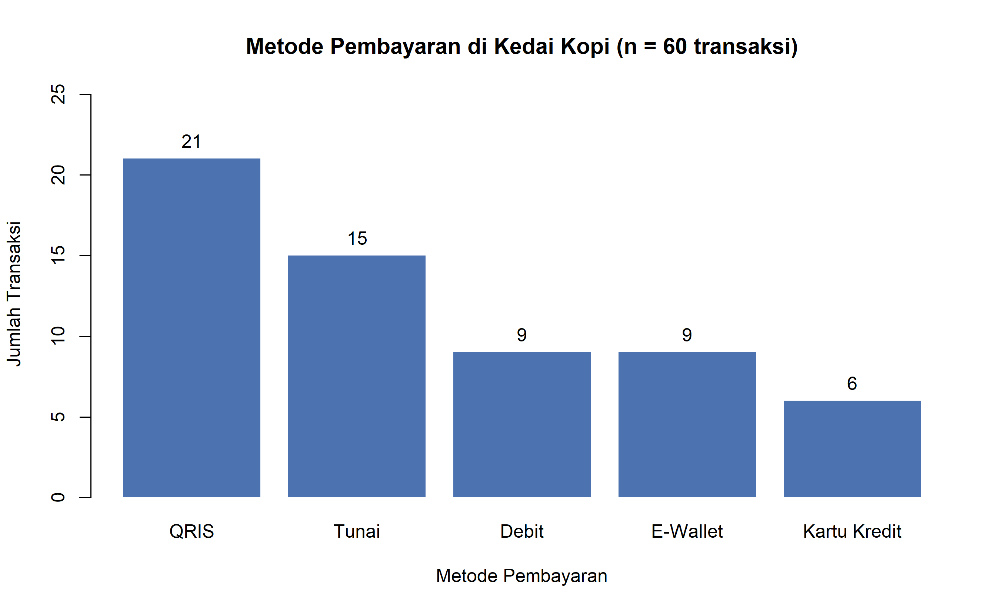
Untuk nama kategori yang panjang atau banyak kategori, diagram batang horizontal lebih mudah dibaca:
par(mar = c(5, 8, 3, 2))
barplot(rev(prop.table(f_metode) * 100), horiz = TRUE, las = 1, col = "#4C72B0", border = NA,
xlab = "Persentase Transaksi (%)", main = "Komposisi Metode Pembayaran")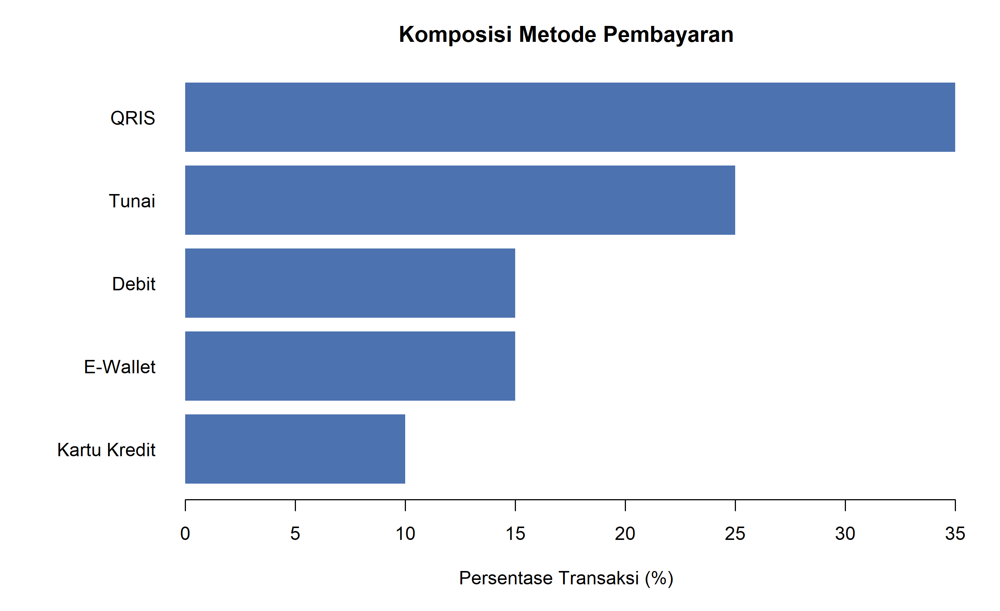
par(mar = c(5, 4, 4, 2) + 0.1)4.4.2 Diagram Batang Berkelompok dan Bertumpuk
warna_waktu <- c("#fdd49e", "#fc8d59", "#b30000")
par(mfrow = c(1, 2))
barplot(silang, beside = TRUE, col = warna_waktu, border = NA, las = 2, cex.names = 0.75,
main = "Berkelompok (beside = TRUE)", ylab = "Jumlah Transaksi")
legend("topright", legend = rownames(silang), fill = warna_waktu, bty = "n", cex = 0.8)
barplot(prop.table(silang, margin = 2) * 100, col = warna_waktu, border = NA, las = 2,
cex.names = 0.75, main = "Bertumpuk 100%", ylab = "Persentase (%)")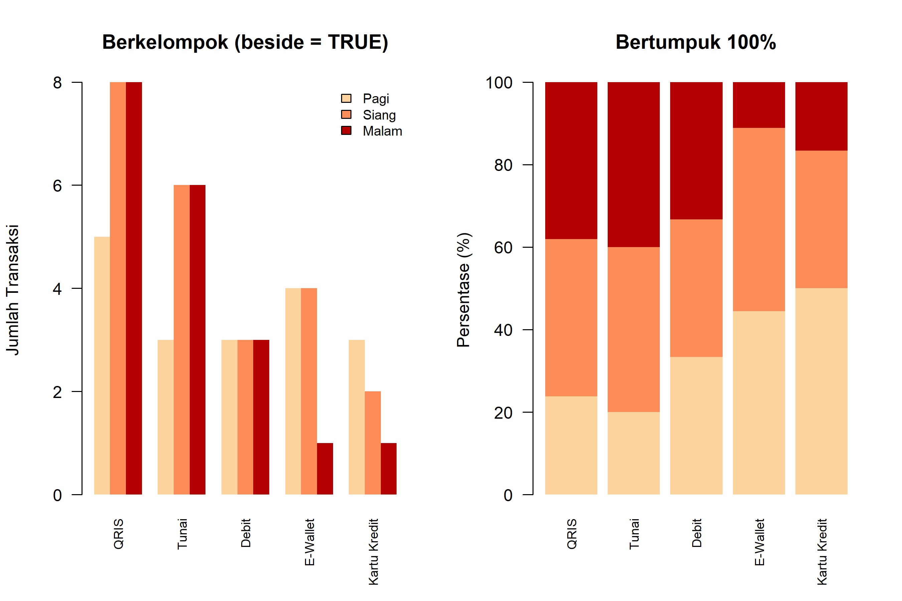
par(mfrow = c(1, 1))Diagram berkelompok baik untuk membandingkan frekuensi absolut; diagram bertumpuk 100% baik untuk membandingkan komposisi antarkategori.
4.4.3 Diagram Pareto
Diagram Pareto adalah diagram batang yang diurutkan dari frekuensi terbesar, ditambah garis persentase kumulatif. Ia dipakai untuk menemukan “sedikit penyebab yang menyumbang sebagian besar masalah” (prinsip 80/20), misalnya jenis keluhan pelanggan.
keluhan <- c("Pengiriman terlambat" = 48, "Barang rusak" = 27, "Salah kirim" = 14,
"Refund lama" = 7, "CS tidak responsif" = 5, "Lainnya" = 4)
kum_persen <- cumsum(keluhan) / sum(keluhan) * 100
par(mar = c(10, 4, 3, 4))
bp <- barplot(keluhan, col = "#DD8452", border = NA, las = 2, ylim = c(0, sum(keluhan)),
ylab = "Jumlah Keluhan", main = "Diagram Pareto Keluhan Pelanggan")
lines(bp, kum_persen / 100 * sum(keluhan), type = "b", pch = 16, lwd = 2)
axis(4, at = seq(0, sum(keluhan), length.out = 5), labels = paste0(seq(0, 100, 25), "%"))
abline(h = 0.8 * sum(keluhan), lty = 2, col = "grey40")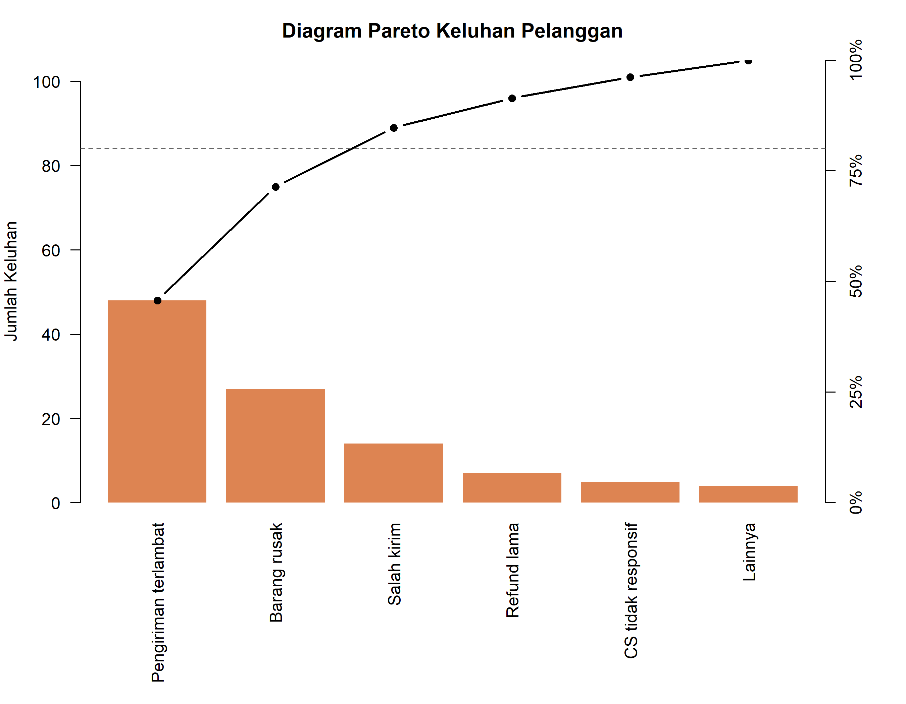
par(mar = c(5, 4, 4, 2) + 0.1)round(kum_persen, 1)Pengiriman terlambat Barang rusak Salah kirim
45.7 71.4 84.8
Refund lama CS tidak responsif Lainnya
91.4 96.2 100.0 Dua jenis keluhan teratas sudah menyumbang 71.4% dari seluruh keluhan – prioritas perbaikan yang jelas.
4.4.4 Diagram Lingkaran (Pie Chart)
Diagram lingkaran menunjukkan bagian dari keseluruhan (total harus 100%).
label_pie <- paste0(names(f_metode), "\n", round(prop.table(f_metode) * 100, 1), "%")
pie(f_metode, labels = label_pie, col = c("#4C72B0", "#DD8452", "#55A868", "#C44E52", "#8172B3"),
border = "white", main = "Komposisi Metode Pembayaran")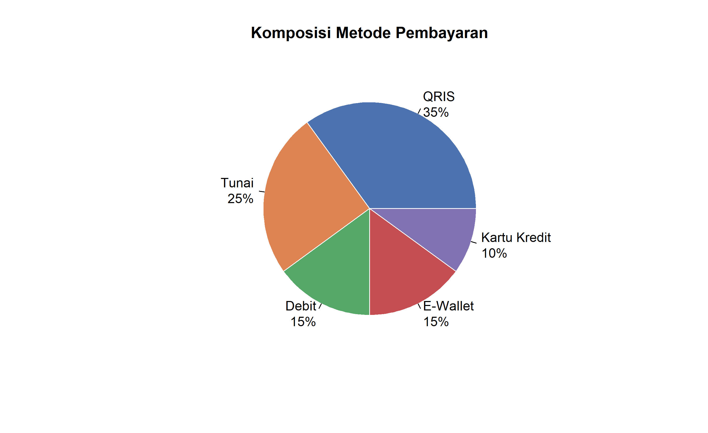
Kapan diagram lingkaran boleh dipakai? Hanya jika (1) kategorinya sedikit (sekitar 2–5), (2) proporsinya berbeda cukup jelas, dan (3) pesannya adalah “bagian dari keseluruhan”. Mata manusia lebih pandai membandingkan panjang daripada sudut, sehingga untuk perbandingan yang teliti, diagram batang hampir selalu lebih baik.
mirip <- c(A = 21, B = 19, C = 20, D = 22, E = 18)
par(mfrow = c(1, 2))
pie(mirip, col = hcl.colors(5, "Set 2"), main = "Mana yang terbesar?")
barplot(mirip, col = hcl.colors(5, "Set 2"), border = NA, main = "Sekarang jelas: D")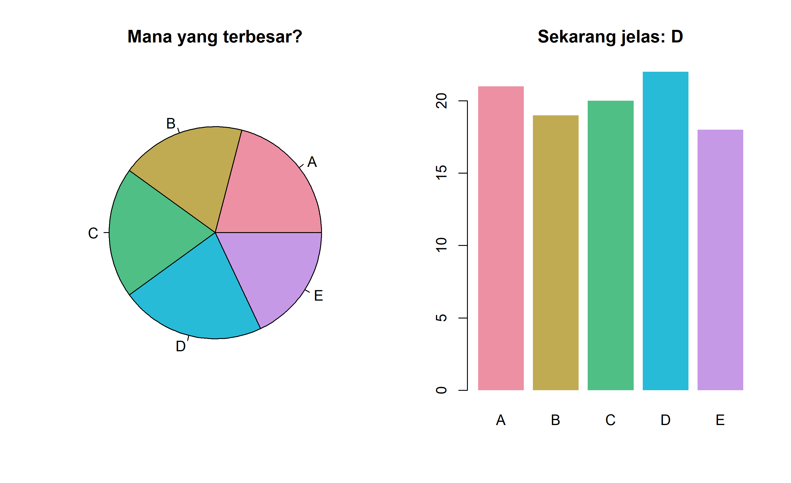
par(mfrow = c(1, 1))4.5 Visualisasi Data Numerik
4.5.1 Histogram
Histogram menampilkan distribusi data numerik yang dikelompokkan. Berbeda dengan diagram batang, batang histogram saling menempel karena kelasnya bersambung (sumbu-x adalah skala numerik).
hist(nilai_ujian, breaks = batas_nyata_u, col = "#4C72B0", border = "white",
xaxt = "n", ylim = c(0, 7),
main = "Histogram Nilai Ujian Statistika (n = 30)", xlab = "Nilai Ujian", ylab = "Frekuensi")
axis(1, at = batas_nyata_u)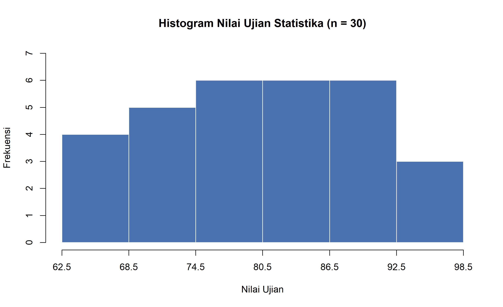
| Aspek | Diagram Batang | Histogram |
|---|---|---|
| Jenis data | Kategorik (atau diskrit dengan sedikit nilai) | Numerik kontinu (atau diskrit dengan banyak nilai) |
| Sumbu-x | Kategori (urutan boleh diubah) | Skala numerik (urutan tetap) |
| Celah antarbatang | Ada | Tidak ada |
| Lebar batang | Tidak bermakna | Mewakili lebar kelas |
4.5.2 Histogram dari Data Terkelompok
Jika hanya tabel yang tersedia, histogram digambar dari batas nyata dan frekuensinya:
plot(NULL, xlim = range(batas_nyata_p), ylim = c(0, 45), xaxt = "n",
xlab = "Pendapatan Mingguan (USD)", ylab = "Frekuensi",
main = "Histogram Pendapatan Mingguan 100 Karyawan")
rect(L_p, 0, U_p, f_p, col = "#9ecae1", border = "white")
axis(1, at = batas_nyata_p, labels = batas_nyata_p)
text((L_p + U_p) / 2, f_p, labels = f_p, pos = 3)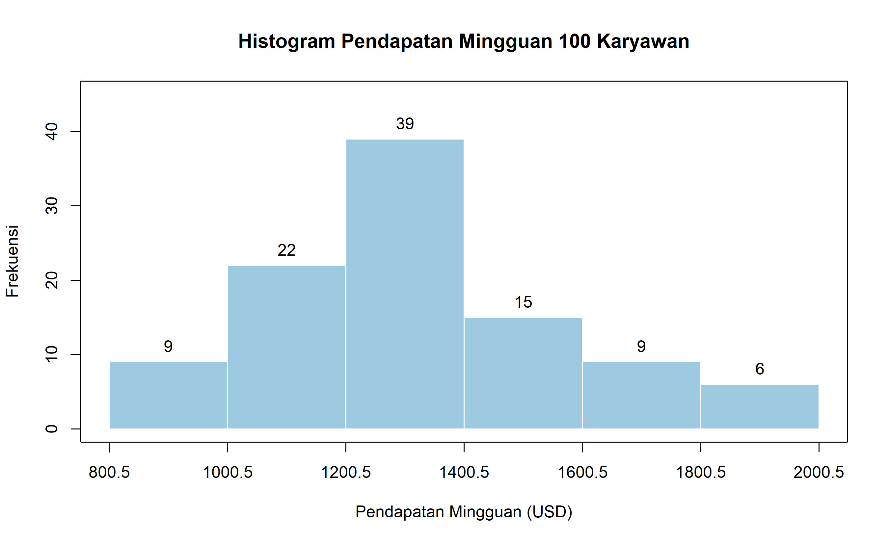
Distribusi pendapatan menjulur ke kanan: puncak di kelas 1201–1400, dengan ekor panjang ke arah pendapatan tinggi.
4.5.3 Poligon Frekuensi
Poligon frekuensi menghubungkan titik tengah puncak tiap kelas dengan garis. Ditambahkan satu kelas kosong di kedua ujung agar poligon “menapak” di sumbu-x. Poligon berguna untuk membandingkan beberapa distribusi dalam satu grafik.
m_u <- (head(batas_nyata_u, -1) + tail(batas_nyata_u, -1)) / 2
x_pol <- c(min(m_u) - w, m_u, max(m_u) + w)
y_pol <- c(0, f_ujian, 0)
hist(nilai_ujian, breaks = batas_nyata_u, col = "grey90", border = "white", ylim = c(0, 7),
xlim = range(x_pol), main = "Poligon Frekuensi Nilai Ujian", xlab = "Nilai Ujian",
ylab = "Frekuensi")
lines(x_pol, y_pol, type = "b", pch = 16, col = "firebrick", lwd = 2)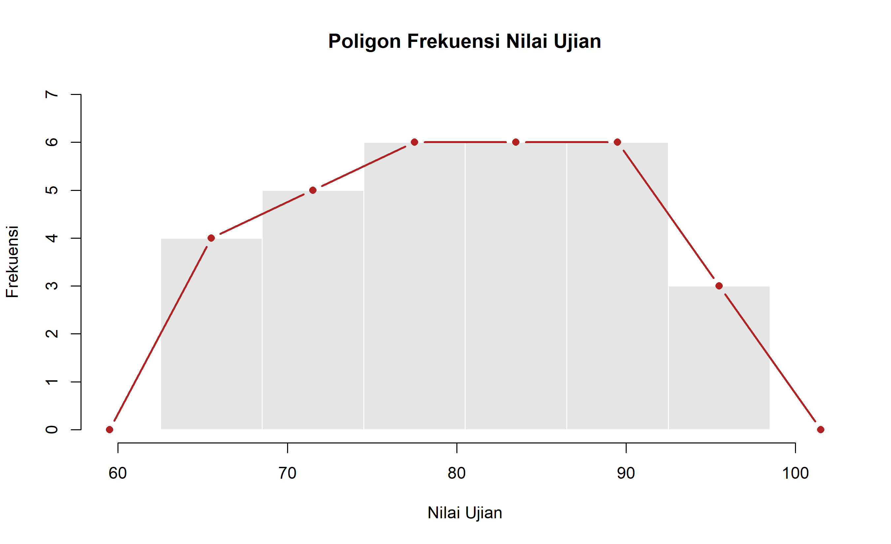
4.5.4 Ogive (Kurva Frekuensi Kumulatif)
Ogive memplot frekuensi kumulatif terhadap batas nyata atas tiap kelas (dimulai dari batas nyata bawah kelas pertama dengan kumulatif 0). Ogive memudahkan menjawab “berapa persen data di bawah nilai tertentu?” dan menaksir median secara grafis.
x_ogive <- batas_nyata_p
y_ogive <- c(0, cumsum(f_p)) / n_p * 100
plot(x_ogive, y_ogive, type = "b", pch = 16, lwd = 2, col = "#4C72B0", ylim = c(0, 100),
xaxt = "n", xlab = "Pendapatan Mingguan (USD)", ylab = "Persentase Kumulatif (%)",
main = "Ogive 'Kurang Dari' Pendapatan Mingguan")
axis(1, at = batas_nyata_p)
abline(h = 50, lty = 2, col = "grey40")
median_grafis <- approx(y_ogive, x_ogive, xout = 50)$y
abline(v = median_grafis, lty = 2, col = "firebrick")
text(median_grafis, 8, labels = paste0("~", round(median_grafis)), pos = 4, col = "firebrick")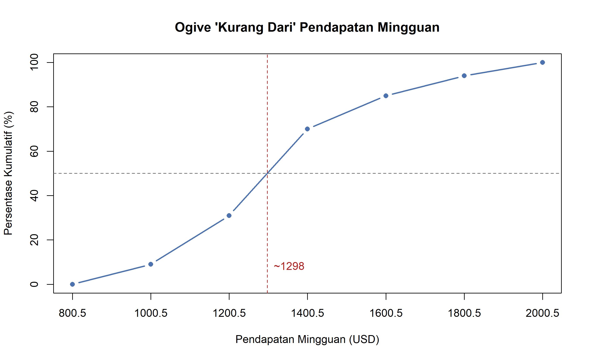
Garis 50% memotong ogive di sekitar 1298 USD – inilah taksiran median secara grafis. Pada Pertemuan 5 kita akan menghitung median data terkelompok secara aljabar dan mendapatkan angka yang sama.
4.5.5 Diagram Batang-Daun (Stem-and-Leaf)
Diagram batang-daun memecah setiap nilai menjadi batang (digit depan) dan daun (digit terakhir). Kelebihannya: bentuk distribusi terlihat seperti histogram, tetapi nilai asli tetap terbaca. Cocok untuk data berukuran kecil–sedang.
stem(nilai_ujian)
The decimal point is 1 digit(s) to the right of the |
6 | 3
6 | 5789
7 | 0124
7 | 56789
8 | 01234
8 | 56789
9 | 01234
9 | 5Baca baris 7 | 0124 sebagai nilai 70, 71, 72, 74. Perhatikan bahwa R otomatis memecah setiap batang menjadi dua baris (daun 0–4 dan daun 5–9) agar bentuk distribusi lebih terlihat. Argumen scale mengatur tingkat pemecahan tersebut; scale = 0.5 menghasilkan satu baris per puluhan:
stem(nilai_ujian, scale = 0.5)
The decimal point is 1 digit(s) to the right of the |
6 | 35789
7 | 012456789
8 | 0123456789
9 | 012345Versi satu baris per puluhan lebih ringkas, tetapi bentuk distribusinya menjadi kurang terlihat – mirip histogram dengan kelas yang terlalu lebar.
4.5.6 Memilih Grafik yang Tepat
| Tujuan / Jenis Data | Grafik yang disarankan |
|---|---|
| Frekuensi kategori (nominal/ordinal) | Diagram batang (horizontal bila label panjang) |
| Bagian dari keseluruhan, sedikit kategori | Diagram lingkaran atau batang bertumpuk 100% |
| Prioritas masalah | Diagram Pareto |
| Hubungan dua variabel kategorik | Batang berkelompok / bertumpuk; tabel silang |
| Distribusi numerik (n besar) | Histogram |
| Distribusi numerik (n kecil) | Stem-and-leaf, diagram titik (stripchart) |
| Membandingkan beberapa distribusi | Poligon frekuensi, boxplot (Pertemuan 6) |
| Persentase di bawah suatu nilai | Ogive |
4.6 Prinsip Visualisasi yang Jujur
4.6.1 Prinsip 1 – Skala: Jangan Memotong Sumbu Diagram Batang
Panjang batang harus sebanding dengan nilainya. Jika sumbu-y tidak dimulai dari nol, perbedaan kecil tampak raksasa.
pangsa <- c("Aplikasi A" = 41, "Aplikasi B" = 43)
par(mfrow = c(1, 2))
barplot(pangsa, ylim = c(40, 43.5), xpd = FALSE, col = c("grey60", "#C44E52"),
main = "MENYESATKAN: sumbu mulai dari 40", ylab = "Pangsa pasar (%)")
box()
barplot(pangsa, ylim = c(0, 50), col = c("grey60", "#C44E52"),
main = "JUJUR: sumbu mulai dari 0", ylab = "Pangsa pasar (%)")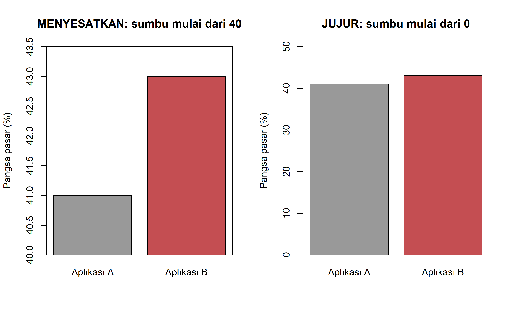
par(mfrow = c(1, 1))Grafik kiri membuat Aplikasi B tampak “tiga kali” lebih besar, padahal selisihnya hanya 2 poin persentase. Diagram garis untuk tren boleh tidak dimulai dari nol (yang dibaca adalah perubahan), tetapi diagram batang wajib dimulai dari nol.
4.6.2 Prinsip 2 – Label: Grafik Harus Dapat Berdiri Sendiri
Setiap grafik minimal memuat: judul yang informatif, label sumbu beserta satuan, legenda bila ada lebih dari satu kelompok, serta sumber data dan \(n\).
par(mfrow = c(1, 2))
hist(nilai_ujian, breaks = batas_nyata_u, main = "", xlab = "", ylab = "")
hist(nilai_ujian, breaks = batas_nyata_u, col = "#4C72B0", border = "white",
main = "Nilai Ujian Statistika Kelas A\n(n = 30, Semester Ganjil)",
xlab = "Nilai Ujian (skala 0-100)", ylab = "Jumlah Mahasiswa")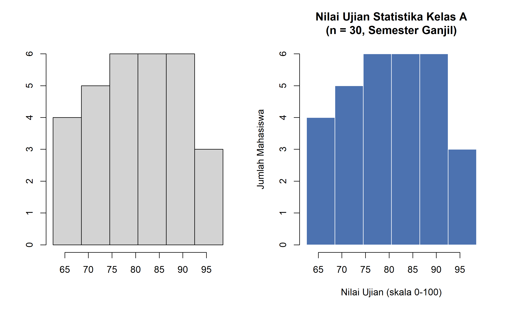
par(mfrow = c(1, 1))4.6.3 Prinsip 3 – Bin: Lebar Kelas Mengubah Cerita
Bentuk histogram sangat bergantung pada banyak kelas (bin). Terlalu sedikit kelas menyembunyikan pola; terlalu banyak kelas membuat grafik “bergerigi” oleh kebetulan.
set.seed(7)
waktu_layanan <- c(rnorm(120, 8, 1.5), rnorm(80, 15, 2)) # dua jenis layanan tercampur
par(mfrow = c(1, 3))
hist(waktu_layanan, breaks = 3, col = "#9ecae1", border = "white", main = "Terlalu sedikit (~3 kelas)",
xlab = "Waktu layanan (menit)")
hist(waktu_layanan, breaks = nclass.Sturges(waktu_layanan), col = "#4C72B0", border = "white",
main = paste0("Sturges (", nclass.Sturges(waktu_layanan), " kelas)"), xlab = "Waktu layanan (menit)")
hist(waktu_layanan, breaks = 60, col = "#9ecae1", border = "white", main = "Terlalu banyak (~60 kelas)",
xlab = "Waktu layanan (menit)")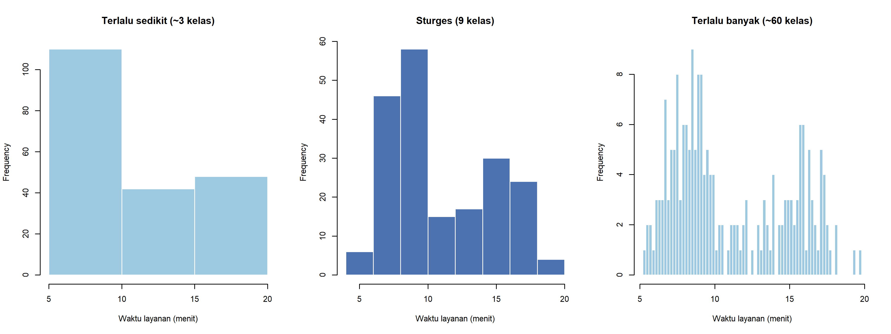
par(mfrow = c(1, 1))Dengan 3 kelas, dua puncak (dua jenis layanan) tidak terlihat. Dengan 60 kelas, grafik penuh “gigi” acak. Aturan Sturges adalah titik awal yang baik untuk \(n\) kecil–sedang, tetapi selalu coba beberapa pilihan dan laporkan yang paling jujur menggambarkan data. Untuk \(n\) besar, aturan lain seperti Freedman–Diaconis (nclass.FD()) sering lebih baik.
c(Sturges = nclass.Sturges(waktu_layanan), Scott = nclass.scott(waktu_layanan),
Freedman_Diaconis = nclass.FD(waktu_layanan)) Sturges Scott Freedman_Diaconis
9 7 7 4.6.4 Prinsip 4 – Interpretasi: Ceritakan Bentuk, Pusat, Sebaran, dan Keanehan
Saat membaca histogram, biasakan menjawab empat hal:
| Aspek | Pertanyaan | Contoh untuk nilai ujian |
|---|---|---|
| Bentuk | Simetris, menjulur kanan/kiri, satu atau dua puncak? | Relatif simetris, satu puncak lebar |
| Pusat | Di sekitar nilai berapa data berkumpul? | Sekitar 80 |
| Sebaran | Dari berapa sampai berapa? Rapat atau menyebar? | 63 sampai 95, cukup merata |
| Keanehan | Ada celah, nilai ekstrem (outlier)? | Tidak tampak outlier |
Ukuran pusat dan sebaran secara numerik dibahas pada Pertemuan 5; bentuk distribusi dan outlier secara formal pada Pertemuan 6.
4.6.5 Grafik Menyesatkan Lainnya
| Praktik menyesatkan | Mengapa menyesatkan | Perbaikan |
|---|---|---|
| Diagram lingkaran dengan total \(\neq\) 100% | Irisan tidak mewakili bagian dari keseluruhan | Gunakan diagram batang |
| Efek 3D, bayangan, gambar ikon yang diperbesar dua dimensi | Luas/volume melebih-lebihkan perbedaan | Gunakan grafik 2D sederhana |
| Lebar kelas histogram tidak sama tanpa penyesuaian | Kelas lebar tampak lebih “penting” | Gunakan lebar sama, atau plot kepadatan (freq = FALSE) |
| Memilih rentang waktu yang menguntungkan (cherry picking) | Tren sesaat disajikan sebagai tren umum | Tampilkan periode yang utuh |
| Dua sumbu-y dengan skala berbeda | Korelasi palsu tampak meyakinkan | Pisahkan menjadi dua grafik |
4.7 Studi Kasus Komprehensif: Waktu Pengiriman Paket
Konteks: Sebuah layanan logistik mencatat waktu pengiriman (jam, dari pemesanan hingga diterima) untuk 80 paket di wilayah Bekasi. Manajer meminta laporan distribusi waktu pengiriman beserta komposisi layanan yang dipakai.
set.seed(2026)
layanan <- sample(c("Reguler", "Ekspres", "Same Day"), 80, replace = TRUE, prob = c(0.55, 0.30, 0.15))
jam_kirim <- round(ifelse(layanan == "Same Day", rnorm(80, 6, 1.5),
ifelse(layanan == "Ekspres", rnorm(80, 22, 4), rnorm(80, 46, 9))), 1)
jam_kirim <- pmax(jam_kirim, 2)
summary(jam_kirim) Min. 1st Qu. Median Mean 3rd Qu. Max.
3.10 22.38 38.90 34.92 48.62 65.50 4.7.1 Langkah 1: Komposisi Layanan
f_layanan <- table(factor(layanan, levels = c("Same Day", "Ekspres", "Reguler")))
kable(data.frame(Layanan = names(f_layanan), f = as.numeric(f_layanan),
Persen = round(as.numeric(prop.table(f_layanan)) * 100, 1)),
caption = "Komposisi Layanan Pengiriman (n = 80)")| Layanan | f | Persen |
|---|---|---|
| Same Day | 12 | 15 |
| Ekspres | 20 | 25 |
| Reguler | 48 | 60 |
barplot(f_layanan, col = c("#55A868", "#DD8452", "#4C72B0"), border = NA,
ylab = "Jumlah Paket", main = "Jumlah Paket per Jenis Layanan")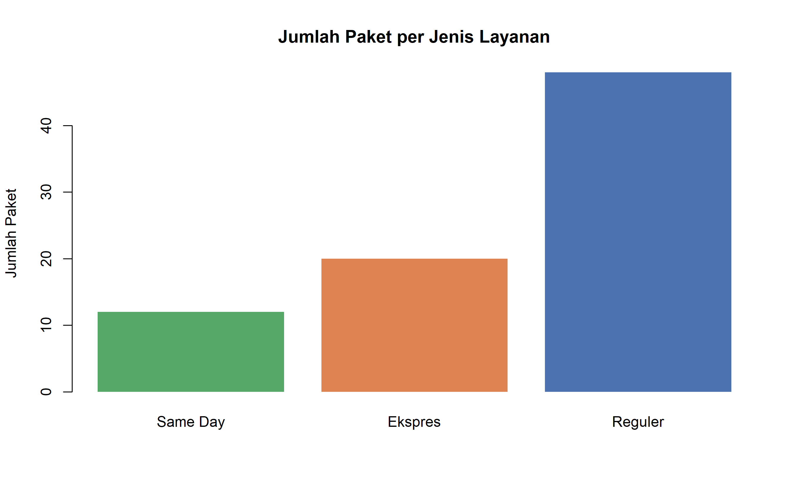
4.7.2 Langkah 2: Tabel Distribusi Frekuensi Waktu Pengiriman
n_kirim <- length(jam_kirim)
k_kirim <- round(1 + 3.322 * log10(n_kirim))
w_kirim <- ceiling((max(jam_kirim) - min(jam_kirim)) / k_kirim)
batas_kirim <- seq(floor(min(jam_kirim)), by = w_kirim, length.out = k_kirim + 1)
c(k = k_kirim, lebar = w_kirim) k lebar
7 9 f_kirim <- as.numeric(table(cut(jam_kirim, breaks = batas_kirim, right = FALSE)))
tabel_kirim <- data.frame(
Interval_jam = paste0("[", head(batas_kirim, -1), ", ", tail(batas_kirim, -1), ")"),
Titik_Tengah = (head(batas_kirim, -1) + tail(batas_kirim, -1)) / 2,
f = f_kirim,
Persen = round(f_kirim / n_kirim * 100, 1),
Persen_Kum = round(cumsum(f_kirim) / n_kirim * 100, 1)
)
kable(tabel_kirim, caption = "Distribusi Frekuensi Waktu Pengiriman (jam)")| Interval_jam | Titik_Tengah | f | Persen | Persen_Kum |
|---|---|---|---|---|
| [3, 12) | 7.5 | 12 | 15.0 | 15.0 |
| [12, 21) | 16.5 | 6 | 7.5 | 22.5 |
| [21, 30) | 25.5 | 14 | 17.5 | 40.0 |
| [30, 39) | 34.5 | 8 | 10.0 | 50.0 |
| [39, 48) | 43.5 | 18 | 22.5 | 72.5 |
| [48, 57) | 52.5 | 15 | 18.8 | 91.2 |
| [57, 66) | 61.5 | 7 | 8.8 | 100.0 |
sum(f_kirim) == n_kirim # pastikan semua data tertampung[1] TRUEKarena data kontinu dengan satu desimal, kita memakai interval setengah terbuka [a, b) (right = FALSE), sehingga nilai yang tepat berada di batas masuk ke kelas di atasnya.
4.7.3 Langkah 3: Histogram dan Ogive
par(mfrow = c(1, 2))
hist(jam_kirim, breaks = batas_kirim, right = FALSE, col = "#4C72B0", border = "white",
main = "Histogram Waktu Pengiriman", xlab = "Waktu pengiriman (jam)", ylab = "Jumlah Paket")
plot(batas_kirim, c(0, cumsum(f_kirim)) / n_kirim * 100, type = "b", pch = 16, lwd = 2,
col = "#DD8452", xlab = "Waktu pengiriman (jam)", ylab = "Persentase kumulatif (%)",
main = "Ogive Waktu Pengiriman", ylim = c(0, 100))
abline(h = c(50, 90), lty = 2, col = "grey50")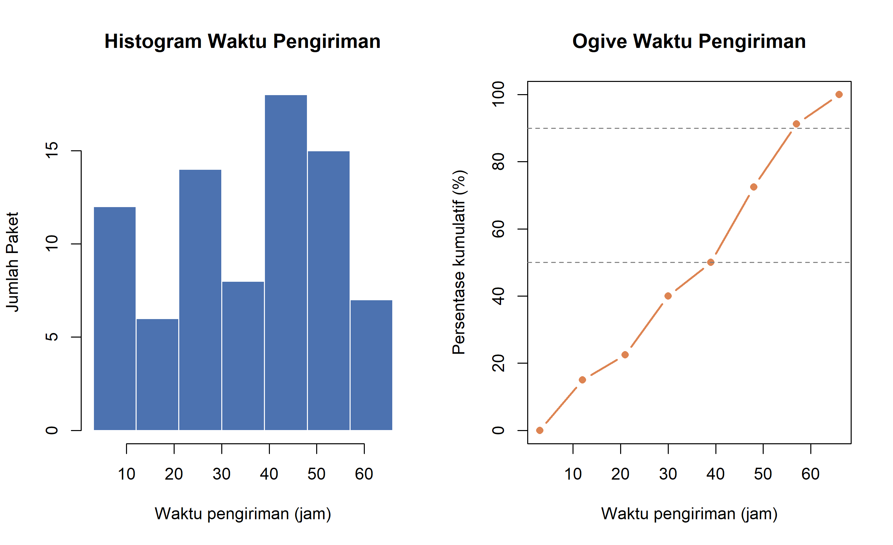
par(mfrow = c(1, 1))4.7.4 Langkah 4: Histogram per Layanan
par(mfrow = c(1, 3))
for (lay in c("Same Day", "Ekspres", "Reguler")) {
hist(jam_kirim[layanan == lay], breaks = batas_kirim, right = FALSE,
col = "#9ecae1", border = "white", ylim = c(0, 25),
main = lay, xlab = "Waktu pengiriman (jam)", ylab = "Jumlah Paket")
}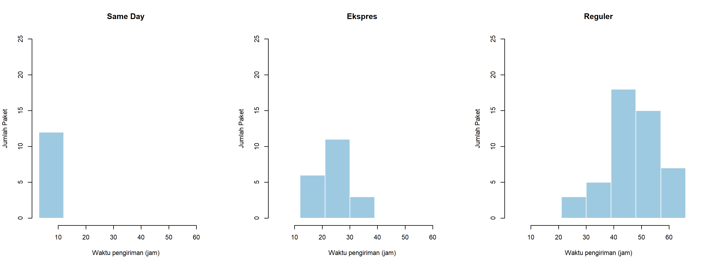
par(mfrow = c(1, 1))4.7.5 Pertanyaan Diskusi dan Jawaban
1. Bagaimana bentuk distribusi waktu pengiriman secara keseluruhan?
Distribusinya tidak satu puncak: ada kelompok paket yang tiba dalam hitungan jam, kelompok sekitar satu hari, dan kelompok terbesar sekitar dua hari. Histogram per layanan menjelaskan penyebabnya – data sebenarnya campuran tiga layanan dengan waktu yang sangat berbeda.
2. Mengapa melaporkan “rata-rata waktu pengiriman” saja tidak tepat?
Karena distribusinya campuran. Satu angka rata-rata (34,9 jam) tidak mewakili pelanggan Same Day maupun Reguler. Laporan yang tepat memisahkan distribusi per layanan.
3. Informasi apa yang dapat dibaca dari ogive?
Misalnya, persentase paket yang tiba kurang dari 24 jam dapat dibaca langsung dari ogive atau dihitung: 30% paket. Garis 90% menunjukkan batas waktu yang dipenuhi oleh 90% pengiriman – berguna untuk menetapkan janji layanan (SLA).
4. Grafik apa yang paling tepat untuk rapat manajemen?
Diagram batang komposisi layanan (kategorik) dan histogram per layanan (numerik), masing-masing dengan judul, satuan, dan \(n\). Diagram lingkaran boleh dipakai untuk komposisi karena hanya ada tiga kategori.
4.8 Latihan Mandiri
4.8.1 Latihan Utama (Exercise 2.14): Kepemilikan Kartu Kredit
Konteks: Sebuah sampel acak dari 80 orang dewasa ditanya mengenai jumlah kartu kredit yang mereka miliki. Hasilnya disajikan dalam tabel berikut (data ini dilanjutkan pada Pertemuan 5).
kelas_kk <- c("0 to 3", "4 to 7", "8 to 11", "12 or more")
frekuensi_kk <- c(18, 26, 22, 14)
n_kk <- sum(frekuensi_kk)Tugas 1: Lengkapi tabel dengan frekuensi relatif, persentase, dan frekuensi kumulatif
tabel_kk <- data.frame(
Kelas = kelas_kk,
f = frekuensi_kk,
f_Relatif = frekuensi_kk / n_kk,
Persen = frekuensi_kk / n_kk * 100,
F_Kumulatif = cumsum(frekuensi_kk),
Persen_Kum = cumsum(frekuensi_kk) / n_kk * 100
)
kable(tabel_kk, digits = 3, caption = "Distribusi Kepemilikan Kartu Kredit (n = 80)")| Kelas | f | f_Relatif | Persen | F_Kumulatif | Persen_Kum |
|---|---|---|---|---|---|
| 0 to 3 | 18 | 0.225 | 22.5 | 18 | 22.5 |
| 4 to 7 | 26 | 0.325 | 32.5 | 44 | 55.0 |
| 8 to 11 | 22 | 0.275 | 27.5 | 66 | 82.5 |
| 12 or more | 14 | 0.175 | 17.5 | 80 | 100.0 |
Tugas 2: Berapa persen responden yang memiliki 8 kartu atau lebih?
sum(frekuensi_kk[3:4]) / n_kk * 100[1] 45Jawaban: 45% responden (22 + 14 = 36 orang) memiliki 8 kartu kredit atau lebih.
Tugas 3: Tentukan batas nyata dan titik tengah kelas
batas_nyata_kk <- c(-0.5, 3.5, 7.5, 11.5, 15.5) # kelas terbuka diasumsikan lebar 4
data.frame(Kelas = kelas_kk,
Batas_Nyata = paste0(head(batas_nyata_kk, -1), " - ", tail(batas_nyata_kk, -1)),
Titik_Tengah = (head(batas_nyata_kk, -1) + tail(batas_nyata_kk, -1)) / 2) Kelas Batas_Nyata Titik_Tengah
1 0 to 3 -0.5 - 3.5 1.5
2 4 to 7 3.5 - 7.5 5.5
3 8 to 11 7.5 - 11.5 9.5
4 12 or more 11.5 - 15.5 13.5Catatan: kelas “12 or more” adalah kelas terbuka (tidak punya batas atas). Untuk menggambar histogram atau menghitung titik tengah, kita harus berasumsi – di sini lebarnya disamakan dengan kelas lain (12–15). Asumsi ini wajib dinyatakan.
Tugas 4: Gambar histogram dan poligon frekuensinya
m_kk <- (head(batas_nyata_kk, -1) + tail(batas_nyata_kk, -1)) / 2
plot(NULL, xlim = c(-4.5, 19.5), ylim = c(0, 30), xaxt = "n",
xlab = "Jumlah Kartu Kredit", ylab = "Frekuensi (f)",
main = "Distribusi Kepemilikan Kartu Kredit (n = 80)")
rect(head(batas_nyata_kk, -1), 0, tail(batas_nyata_kk, -1), frekuensi_kk,
col = "#6C5B7B", border = "white")
lines(c(-2.5, m_kk, 17.5), c(0, frekuensi_kk, 0), type = "b", pch = 16, col = "#F8B195", lwd = 2)
axis(1, at = batas_nyata_kk)
text(m_kk, frekuensi_kk, frekuensi_kk, pos = 3)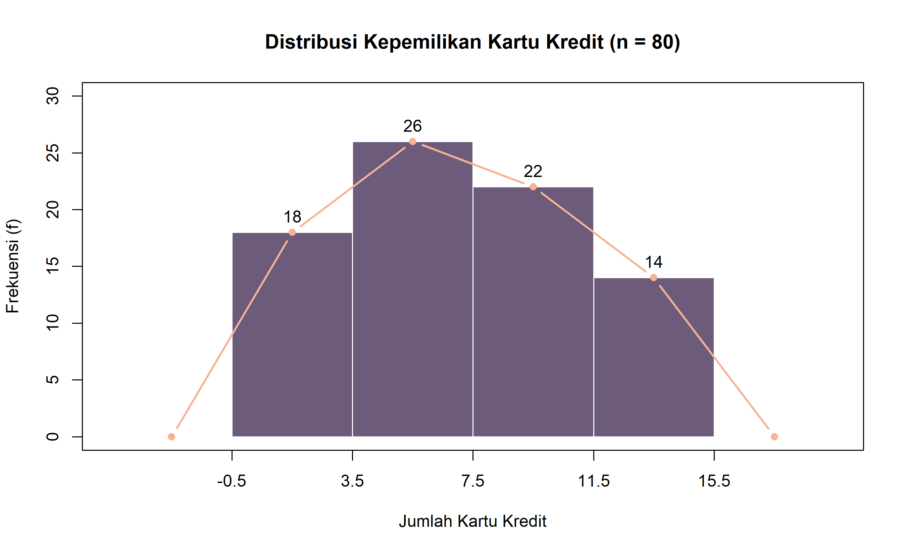
Tugas 5: Interpretasikan distribusinya
Jawaban: Kelas dengan frekuensi terbanyak adalah 4 to 7 (26 orang, 32,5%). Frekuensi naik dari kelas pertama ke kelas kedua lalu turun perlahan, sehingga distribusinya sedikit menjulur ke kanan. Sebanyak 44 responden (55%, dari frekuensi kumulatif kelas kedua) memiliki 7 kartu atau kurang. Ukuran pusat dan sebarannya dihitung pada Pertemuan 5.
Tugas 6 (Tantangan): Diagram batang atau histogram?
Jumlah kartu kredit adalah data diskrit. Apakah lebih tepat digambarkan dengan diagram batang atau histogram? Jelaskan.
Jawaban: Jika data mentah tersedia dengan sedikit nilai berbeda (misalnya 0–15), diagram batang per nilai paling informatif. Namun karena data sudah dikelompokkan menjadi interval bersambung (0–3, 4–7, …), histogram dengan batas nyata tepat dipakai – batasnya menempel karena setiap bilangan bulat pasti masuk satu kelas. Yang penting: kelas terbuka “12 or more” diberi catatan asumsi.
4.8.2 Latihan Tambahan (Self-Check)
Kerjakan soal-soal berikut secara mandiri sebelum melihat kunci jawaban pada komentar kode.
Soal A. Data usia (tahun) 25 peserta pelatihan: 23, 31, 27, 45, 38, 29, 34, 41, 26, 36, 52, 30, 28, 33, 47, 39, 24, 35, 43, 32, 37, 29, 48, 31, 40. Susun tabel distribusi frekuensi dengan Aturan Sturges, lengkap dengan batas nyata, titik tengah, frekuensi relatif, dan kumulatif.
usia <- c(23, 31, 27, 45, 38, 29, 34, 41, 26, 36, 52, 30, 28, 33, 47, 39, 24, 35, 43,
32, 37, 29, 48, 31, 40)
# Kunci jawaban:
# k = 1 + 3.322 log10(25) = 5.64 -> 6 kelas; R = 52 - 23 = 29; w = 29/6 = 4.83 -> 5
# Kelas: 23-27, 28-32, 33-37, 38-42, 43-47, 48-52
# Batas nyata: 22.5, 27.5, 32.5, 37.5, 42.5, 47.5, 52.5
table(cut(usia, breaks = seq(22.5, 52.5, by = 5)))
(22.5,27.5] (27.5,32.5] (32.5,37.5] (37.5,42.5] (42.5,47.5] (47.5,52.5]
4 7 5 4 3 2 # f = 4, 7, 5, 4, 3, 2 (total 25); titik tengah = 25, 30, 35, 40, 45, 50Soal B. Buat diagram batang-daun untuk data usia pada Soal A, lalu tentukan usia yang paling sering muncul.
stem(usia)
The decimal point is 1 digit(s) to the right of the |
2 | 3467899
3 | 01123456789
4 | 013578
5 | 2# Kunci jawaban: batang 2, 3, 4, 5. Usia 29 dan 31 masing-masing muncul dua kali
# (terlihat sebagai daun "99" pada batang 2 dan "11" pada batang 3).Soal C. Sebuah media menampilkan diagram batang penjualan dua merek dengan sumbu-y dari 950 sampai 1.000 unit (Merek A = 960, Merek B = 990). Jelaskan mengapa grafik itu menyesatkan dan hitung perbandingan panjang batang yang tampak vs yang seharusnya.
# Kunci jawaban:
(990 - 950) / (960 - 950) # tampak: batang B = 4 kali batang A[1] 4990 / 960 # seharusnya: B hanya ~1.03 kali A (lebih besar 3%)[1] 1.03125# Diagram batang harus dimulai dari 0 agar panjang batang sebanding dengan nilainya.Soal D. Dari tabel pendapatan mingguan pada praktikum ini, berapa persen karyawan yang berpendapatan lebih dari 1.600,5 USD? Kelas mana yang memuat median?
# Kunci jawaban:
sum(f_p[5:6]) / sum(f_p) * 100 # (9 + 6) / 100 = 15%[1] 15cumsum(f_p) # 9, 31, 70, ... -> posisi median ke-50 berada di kelas 1201-1400[1] 9 31 70 85 94 1004.9 Kesalahan Umum dalam Penyajian dan Visualisasi Data
- Memakai histogram untuk data kategorik (atau diagram batang dengan batang menempel untuk kategori) – pilih grafik sesuai jenis data.
- Memotong sumbu-y diagram batang – perbedaan kecil tampak sangat besar.
- Diagram lingkaran dengan terlalu banyak irisan atau total yang bukan 100%.
- Grafik tanpa judul, label sumbu, satuan, atau \(n\) – pembaca tidak dapat menafsirkan.
- Memilih banyak kelas asal-asalan – terlalu sedikit menyembunyikan pola, terlalu banyak menimbulkan pola palsu.
- Lebar kelas dibulatkan ke bawah sehingga data terbesar tidak tertampung – lebar kelas dibulatkan ke atas.
- Kelas yang tumpang tindih atau berlubang (misalnya 60–70 dan 70–80) – satu nilai tidak boleh masuk dua kelas; gunakan batas nyata atau interval setengah terbuka yang konsisten.
- Menghitung frekuensi kumulatif untuk data nominal tanpa urutan yang bermakna.
- Tidak menyatakan asumsi kelas terbuka (“12 or more”) saat menggambar histogram atau menghitung titik tengah.
- Mengurutkan kategori ordinal menurut abjad – urutan harus mengikuti tingkatannya.
- Membandingkan persentase tabel silang ke arah yang salah – pilih persentase baris atau kolom sesuai pertanyaan.
- Efek 3D dan dekorasi berlebihan yang mendistorsi proporsi.
4.10 Cheat Sheet: Fungsi R yang Digunakan
| Fungsi | Kegunaan |
|---|---|
table(x) |
Frekuensi tiap kategori/nilai |
prop.table(tabel, margin) |
Frekuensi relatif; margin = 1 per baris, 2 per kolom |
addmargins(tabel) |
Menambahkan total baris dan kolom |
sort(tabel, decreasing = TRUE) |
Mengurutkan frekuensi (untuk Pareto) |
cumsum(f) |
Frekuensi kumulatif |
rev(cumsum(rev(f))) |
Frekuensi kumulatif “lebih dari” |
log10(n), ceiling(x), round(x) |
Perhitungan Aturan Sturges dan lebar kelas |
nclass.Sturges(x), nclass.FD(x), nclass.scott(x) |
Banyak kelas menurut berbagai aturan |
seq(from, by, length.out) |
Membuat batas kelas |
cut(x, breaks, right = TRUE/FALSE) |
Mengelompokkan data ke kelas |
hist(x, breaks, plot = FALSE) |
Menghitung frekuensi kelas tanpa menggambar |
barplot(f, horiz, beside) |
Diagram batang (horizontal, berkelompok, bertumpuk) |
pie(f, labels) |
Diagram lingkaran |
hist(x, breaks) |
Histogram |
rect(x1, y1, x2, y2) |
Menggambar histogram dari data terkelompok |
lines(x, y, type = "b") |
Poligon frekuensi / ogive / garis kumulatif Pareto |
approx(x, y, xout) |
Interpolasi linear (menaksir median dari ogive) |
stem(x, scale) |
Diagram batang-daun |
axis(), text(), legend(), abline() |
Melengkapi grafik dengan sumbu, label, legenda, garis bantu |
par(mfrow = c(r, c)), par(mar = ...) |
Mengatur tata letak dan margin grafik |
4.11 Glosarium Istilah
| Istilah | Definisi Singkat |
|---|---|
| Distribusi Frekuensi | Tabel yang menunjukkan banyaknya data pada setiap kategori atau kelas |
| Frekuensi Relatif | Frekuensi dibagi banyaknya data (\(f/n\)) |
| Frekuensi Kumulatif | Jumlah frekuensi hingga kelas tertentu |
| Tabel Silang | Tabel frekuensi dua variabel kategorik sekaligus |
| Aturan Sturges | Aturan menentukan banyak kelas: \(k = 1 + 3{,}322 \log_{10} n\) |
| Lebar Kelas | Selisih batas nyata atas dan bawah sebuah kelas |
| Batas Kelas | Nilai terkecil dan terbesar yang tercantum pada sebuah kelas |
| Batas Nyata | Batas kelas yang diperluas setengah satuan agar kelas bersambung |
| Titik Tengah Kelas | Rata-rata batas bawah dan atas kelas; wakil nilai kelas |
| Kelas Terbuka | Kelas tanpa batas bawah atau batas atas (misalnya “12 or more”) |
| Diagram Batang | Grafik batang terpisah untuk frekuensi data kategorik |
| Diagram Pareto | Diagram batang terurut dengan garis persentase kumulatif |
| Diagram Lingkaran | Grafik irisan lingkaran yang menunjukkan bagian dari keseluruhan |
| Histogram | Grafik batang bersambung untuk distribusi data numerik |
| Poligon Frekuensi | Garis yang menghubungkan titik tengah puncak kelas histogram |
| Ogive | Kurva frekuensi kumulatif terhadap batas nyata atas |
| Stem-and-Leaf | Diagram yang memecah nilai menjadi batang dan daun sambil mempertahankan nilai asli |
| Bin | Istilah lain untuk kelas/interval pada histogram |
4.12 Rangkuman dan Kesimpulan
- Tabel distribusi frekuensi meringkas data menjadi frekuensi, frekuensi relatif, dan frekuensi kumulatif. Tabel silang meringkas hubungan dua variabel kategorik.
- Data numerik dikelompokkan dengan Aturan Sturges, lebar kelas yang dibulatkan ke atas, batas nyata agar kelas bersambung, dan titik tengah sebagai wakil kelas.
- Jenis data menentukan grafik: diagram batang/lingkaran/Pareto untuk kategorik; histogram, poligon, ogive, dan stem-and-leaf untuk numerik.
- Visualisasi yang jujur memulai sumbu diagram batang dari nol, memberi label lengkap, memilih bin dengan cermat, dan menghindari dekorasi yang mendistorsi.
- Membaca grafik berarti menceritakan bentuk, pusat, sebaran, dan keanehan data.
Jembatan ke sesi berikutnya: Pertemuan 5 mengubah kesan visual “pusat di sekitar 80” dan “sebaran dari 63 sampai 95” menjadi angka yang tepat – mean, median, modus, rentang, varians, simpangan baku, dan koefisien variasi – termasuk perhitungannya dari tabel data terkelompok yang telah kita susun hari ini.
4.13 Referensi Pendukung
Materi ini merangkum topik penyajian data dan visualisasi (organizing and visualizing data) yang umum dibahas pada bab awal buku teks pengantar statistika bisnis/data science. Mahasiswa disarankan melengkapi pemahaman dengan merujuk pada:
- Modul/slide perkuliahan “Introduction to Statistics (SDT-1102)” – Pertemuan 4: Penyajian dan Visualisasi Data.
- Tufte, E. R. The Visual Display of Quantitative Information. Graphics Press.
- Huff, D. How to Lie with Statistics. W. W. Norton (bab tentang grafik yang menyesatkan).
-
Dokumentasi resmi R:
?table,?cut,?hist,?barplot,?pie,?stem,?nclass.Sturges(dapat diakses langsung di R/RStudio).